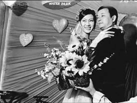
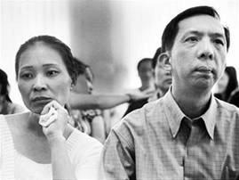
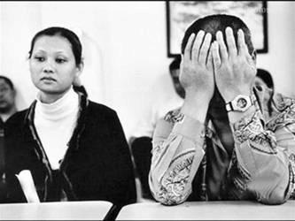

Tiền Phong - Tôi ngất xỉu bên dây chuyền lúc mười một giờ trưa, gục lên thùng trứng gà trắng như vôi. Có lẽ hai trăm bữa cơm chay dài dằng dặc đã rút sức lực tôi. Mọi người gọi xe cấp cứu chở tôi vào viện gần nhà. Chiếc dây buộc tóc của tôi rớt lại, trôi theo băng chuyền sang xưởng hai đóng gói.

Trích ra trong bộ ảnh của nhiếp ảnh gia nổi tiếng Trương Càn Kỳ (Đài Loan)
Mỗi sáng, tôi vội vã dậy, thay đồ, nhìn sang cửa buồng xem Thán có ngủ ở nhà không, hay có còn ở nhà không.
Mỗi sáng, Thán tụt bộ quần áo cũ trước cửa buồng cho tôi giặt dọn. Những bộ quần áo nhằn nhèo là thông điệp duy nhất giữa vợ với chồng. Tiếng Hoa của tôi đã khá hơn, tôi đã biết nói rất nhiều điều, nhưng tôi hình như không còn điều gì để trò chuyện cùng chồng nữa.
Chiếc xe cũ dựng trước cửa nhà, lật cốp xe lấy nón bảo hiểm, tôi đi chừng mười lăm phút tới nhà máy. Tôi thầm cảm ơn thói quen ăn đường uống chợ của người Đài Loan đã không đặt lên vai tôi áp lực của những bữa cơm chiều. Và tiện nhất là giờ đây khi tôi đang ăn chay, tôi tình nguyện thực hiện lời cầu nguyện mấy tháng trước, khi con tôi sắp chào đời.
Nhà máy đã từng có rất nhiều công nhân Việt Nam, nhưng các cô dâu chỉ làm vài tháng rồi nghỉ. Lương thấp nhưng có ăn trưa ăn tối. Chỉ có điều, ngoài kia có hàng trăm công việc thu nhập nhiều hơn mỗi ngày ngồi xếp trứng vào từng kẹp nhựa trong veo, nhàm tẻ.
Khi Dương Lý Huy dẫn tôi tới xin việc, ai cũng nghĩ đấy là chồng tôi. Vì thế, tôi không cần phải viết giấy đảm bảo. Rất nhiều xí nghiệp ở Đài Loan đã buộc cô dâu Việt phải đảm bảo có sự đồng ý của chồng mới nhận vào làm. Thân phận dâu Việt là nhược điểm lớn nhất khi đi xin việc tại đây. Ông chủ không sợ dân Việt, mà sợ ông chồng Đài.
Tôi cũng thế, tôi không sợ chủ bằng sợ chồng.
Cũng không phải vì tôi sợ Thán đánh, tôi không sợ Thán cắt đứt mọi hỗ trợ tài chính vốn đã eo hẹp, tôi càng không sợ bị vứt ra đường. Nhưng không hiểu sao, tôi đứng trước mặt chồng luôn lo âu. Tôi sợ những gì đó vô hình đang ràng chúng tôi lại trong không gian chật hẹp ba mươi lăm chiếu * (1 chiếu = 1,65m2), căn hộ chung cư đường Đại Nhã.
Kéo cánh tủ ra là tấm gương rộng bằng nửa bức tường. Kéo tấm gương ra là những áo quần ngay ngắn xa lạ, lạnh lẽo trắng. Ngày mới về đây, chúng tôi thích yêu nhau trước tấm gương lớn. Bây giờ, gương tủ phản chiếu nét mặt tôi cam chịu, dồn nén, tôi không bao giờ khóc trước gương, nên trong bóng ấy sẽ không bao giờ thấy nước mắt.
Tôi từ lâu đã không còn dám treo quần áo chung với đồ của chồng, chiếc tủ áo lớn và trống một bên, đứng chễm chệ như đang quan sát cuộc sống chung đôi lạc loài này.
Hình như không chỉ là kiệt sức, thiếu dinh dưỡng, cũng không chỉ là huyết áp thấp, cái bệnh xấu máu như mẹ tôi. Tôi được truyền nước, vẫn vừa sốt vừa rét, bác sĩ bảo, gọi chồng vào rồi nhập viện!
Tôi nói:
- Xin cho tôi nằm viện trước, gọi chồng sau!
Ở Việt Nam, hình như người ta gọi đây là bệnh hậu sản? Tôi mới sinh đứa con đầu, không có tí kinh nghiệm gì, chẳng biết hỏi ai.
Chiều tối Thán tới, chẳng mang gì. Tôi nói, sốt quá xin cho em một cốc nước, Thán nói, chờ đó, về nhà lấy. Rồi Thán đi luôn không quay lại. Sáng sau, trước lúc đi làm, Thán đến bệnh viện đưa cho tôi ba nghìn Đài tệ rồi đi thẳng. Chắc ý của chồng tôi là, chỉ được ốm trong khoảng ngần ấy tiền.
Nhưng tôi đã ốm gấp mười lần số tiền đó, tôi nằm viện một tháng. Nhà máy mang trả lương và nói, sa thải cô XiaoYu (Tiểu Ngọc) từ ngày hôm nay.

Những ngày nằm viện, ngày ngày tôi lại nằm suông ngó lên song cửa, ngoài kia có mây bay qua những tán cây phong lá năm cánh, xanh xanh, xôn xao. Không ai biết tôi đang là ai, đang ở đâu, đang sống cuộc đời thế nào. Cảm giác tự do này sao thanh thản thế. Chỉ cố để không nghĩ đến con và quê nhà.
Cảm giác thanh thản như thể mình sẽ đi vào cõi chết, chả tha thiết gì nữa, không cầu xin gì nữa. Chỉ ngày ngày nhìn lên bầu trời xanh và những tay lá phong xôn xao, thơi thả lay trong gió miền Trung.
Sao ở đây những ngày đẹp trời quanh năm?
Giường bên là bà mẹ họ Tiêu, hình như cắt tử cung hay buồng trứng gì đó, cũng nằm suốt ngày. Bà không biết tiếng Hoa, tôi cũng không biết tiếng bản địa Đài Loan, thành ra hai người nằm nhìn nhau im lặng qua thành giường.
Người mẹ ngày nào cũng được con trai mang cơm tới. Người con trai bà Tiêu mới ba mươi mấy tuổi đã goá vợ sau trận động đất khủng khiếp ngày 21-9 cách đây vài năm.
Con trai bà Tiêu họ Nhan, ban đầu tôi gọi Nhan tiên sinh. Anh là phiên dịch bất đắc dĩ cho tôi và bà Tiêu, anh giúp tôi gọi bác sĩ, giúp tôi mua vài thứ lặt vặt.
Rồi Nhan từ chỗ phải chăm một người bệnh, trở thành hộ lý cho hai người bệnh. Từ ngày đặt chân tới đất Đài Loan đến giờ, tôi mới chỉ biết mỗi chồng tôi. Giờ đây, tôi bỗng có một nỗi ấm áp không thể nào nói ra mỗi khi nghe tiếng chân Nhan đến gần phòng mình, giờ tan sở.
Tôi không biết tôi đã yêu Nhan từ khi nào. Hoặc anh đã chấp nhận tôi vào đời anh từ khi nào.
Tôi không biết tôi bệnh gì, nhưng sau một thời gian quá dài nằm đây, tôi trở nên thông thạo một số từ ngữ chuyên môn y khoa. Lúc nào đỡ mệt, tôi ngồi dậy mang tự điển ra sân ngồi đọc. Cuốn tự điển Trung-Anh bé bằng bao diêm, mua ở cửa hàng Seven-Eleven cùng tấm bản đồ Đài Trung. Đó là thứ duy nhất tôi biết đọc hiểu ở đây.
"Nằm viện như một cái chết tạm thời. Và cơn đau chỉ là một cái cớ để tôi buông xuôi, nhận ra cuộc đời mình bơ vơ không còn ai nương tựa. Cảm ơn cơn đau này giúp tôi khôn ngoan đối diện cuộc đời."
Một tháng nằm viện, tôi học thêm hàng nghìn từ. Biết mặt cả trăm chữ Hán mới. Tấm bản đồ tôi cũng tỉ mỉ xem, đánh dấu những nơi tôi sẽ tới khi nào mạnh khỏe và tự do. Tôi sẽ đến đầm Nhật Nguyệt, đi Phủ Li ăn lẩu nấm, đi thiền viện Trung Hưng lớn nhất Đài Loan.
Tôi không ngờ sau này, những chấm đánh dấu trên bản đồ đó, tôi đã tới, đã ngồi ăn nhà hàng ngon nhất, ở trong khách sạn Hàn Bích Lầu đắt tiền nhất, với thân phận nhơ nhớp của một cô điếm lạc.
20. Mỗi chiều, Nhan lại mang thức gì đến bệnh viện cho bà mẹ. Cũng có khi vào lúc đêm khuya, đã hơn mười giờ đêm, hành lang vắng tanh, tiếng chân người đàn ông bước mạnh ngoài cửa gây những âm vang đặc biệt còn lưu lại trong tôi.
Không phải gia đình nào cũng tình nghĩa thế. Viện dưỡng lão ở Đài Loan nhan nhản. Hoặc những người già trên phố tôi gặp, đều ngồi trên xe do một cô giúp việc ngoại quốc đẩy dọc công viên. Chỉ có người già và các cô giúp việc ngoại quốc mới đứng bên lề dòng thác quay cuồng kiếm tiền và tiêu tiền của người Đài.

Tôi đã từng bị cuốn vào dòng thác ấy sau khi gửi con về Việt Nam. Tôi khao khát có thật nhiều tiền để thoát ra khỏi những ám ảnh thân phận.
Tôi dùng thời gian để học tiếng, học chữ, và chờ những buổi chiều Nhan vào, trò chuyện, mua nước giúp tôi, sẻ thêm đồ ăn cho tôi, ngồi trò chuyện với hai người đàn bà trong căn phòng vuông vức đầy dây nhợ.
Lần đầu tiên tôi hiểu ra, tình yêu là cảm giác được nương tựa, được yên lòng. Là cảm giác thân hơn một người bạn thân, hơn cả chính mình. Tôi mất một buổi chiều để kể chuyện của tôi cho người đàn ông góa vợ. Nhan chỉ nói ngắn gọn, bảo, nhà tôi nghèo, nhưng nhà tôi quý người.
Mẹ Nhan đồng ý ngồi ăn cơm hộp ở giường bệnh, khi Nhan chở tôi ra ngoài ăn tối. Khi tôi xuất viện, tôi về nhà lấy đồ đạc của tôi. Tôi quyết định đến sống chung với người tôi yêu.
Dương Lý Huy lại chở tôi ra viện. Trên chuyến taxi, Huy nói, trông cô gầy gò quá, nhưng có vẻ khắc nghiệt, hơn lần đầu tôi gặp.
Tôi im lặng cho đến lúc về tới nhà. Lúc dọn đồ, tôi để ý thấy buồng tắm đã có thêm bàn chải và khăn tắm màu hồng, giầy và guốc cao gót quăng sau cửa, quần áo An Kỳ vứt bừa trong nhà. Đồ lót thêu ren nhăn nhúm quanh giường làm tôi thấy lợm, khi tưởng tượng nó được tuột xuống thế nào!
Họ cứ vui sướng ngày hôm nay đi, còn tôi, đã thoát xác để vươn tới một cuộc sống khác.
Tôi bốc điện thoại nhà, gọi vào máy di động của chồng, báo cho Thán biết tôi sẽ đi. Thỏa thuận sẽ không li hôn cho tới khi tôi được nhập quốc tịch Đài Loan. Còn bây giờ, ai lo đời người ấy, tôi trả chìa khóa nhà cho chồng tôi, trên chiếc bàn ăn.
Không thể tưởng tượng đã có lúc ta hài lòng, với cuộc sống trong bốn bức tường, những cuộc tưởng là yêu, những trao đổi giản đơn, mà tưởng đó là đích đến an toàn đời mình.
Lúc ra đi, sao tôi lại không khóc nhỉ? Người đàn bà ngang ngược trong tôi đã giết chết nước mắt từ khi nào?
Hay vì hành lý nhẹ tênh, đi vài bước đã xuống đường, xe Dương Lý Huy đậu im lìm dưới gốc hoa Mỹ Nhân đang bắt đầu nở vài bông cánh đỏ điệu đà. Hoa Mỹ Nhân đẹp quá, năm ngoái khi tôi sang đây, mùa hoa đã tàn.
Có những nỗi đau gọi là mãi mãi không phải trong tâm thức những người vợ ấy mà là trong tiềm thức khi người đàn bà dạt xứ hạnh phúc thì ít, đớn đau thì nhiều.